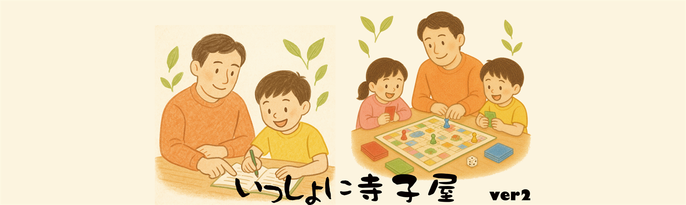

朝霞市で無料の学習支援・子どもの居場所
「やればできる！」と「知るって面白い！」をいっしょに見つける学習スペース。それぞれのペースで学べる、みんなの寺子屋です。
宿題・ワークのサポートや自分の好きなことに取り組む時間、みんなでゲームを楽しむ時間など、のびのびと過ごせる場を目指しています。
また、月に1回ほど工作・ものづくりやスペシャル講義などのイベントも企画しています。
「できる」がふえる！自信が芽生える。

「やればできる！」と「知るって面白い！」をいっしょに見つける学習スペース。それぞれのペースで学べる、みんなの寺子屋です。
宿題・ワークのサポートや自分の好きなことに取り組む時間、みんなでゲームを楽しむ時間など、のびのびと過ごせる場を目指しています。
また、月に1回ほど工作・ものづくりやスペシャル講義などのイベントも企画しています。
「いっしょに寺子屋」は、子どもたちがそれぞれのペースで過ごせる学習スペースです。
大切にしているのは、テストの点数だけではなく、「やればできる！」という小さな自信と、「知ることは面白い！」というワクワクする気持ちです。
学校の宿題のペースメーカーとして利用するのも、大歓迎。教科書から少し離れて、自分の興味のあることをとことん深めるのも大歓迎です。
学校に通っている子も、お休みしている子も、子どもたち一人ひとりの「やりたい」「知りたい」に寄り添いサポートします。
【対象】小学生・中学生・高校生（どなたでも大歓迎です！）
💡 親子での参加も、子どもたちだけの参加も、どちらでもOKです！
※「まずは場所の雰囲気を見てみたい」という見学・体験も、いつでもお待ちしています。
わくわくタイム
自分の好きなこと・得意なことに取り組む時間
がんばるタイム
宿題・ワークをいっしょにやります。わからないことは何でも質問できます
ゲームタイム
みんなでボードゲームやカードゲームで楽しみます
毎月1回ほど、特別なイベントを企画しています。
| 日付 | 時間 | 場所 |
|---|---|---|
| 2026年9月5日（土） | 10:00-12:00 | 弁財市民センター 和室 |
| 2026年9月12日（土） | 10:00-12:00 | 弁財市民センター 和室 |
| 2026年9月19日（土） | 10:00-12:00 | 弁財市民センター 和室 スペシャルイベント：スペシャル「モアイの謎にせまる」 |
| 2026年9月26日（土） | おやすみ | おやすみ |
お世話になった団体や、朝霞市周辺の関連団体・活動をご紹介します。
| 団体名 | ジャンル | リンク |
|---|---|---|
| フリースクールコンコン | フリースクール | サイトを見る |
| オフトコ | 親の会 | Instagramを見る |
| あさかプレーパークの会 | 子どもの居場所 | サイトを見る |
| ぷらっとほーむグループ埼玉県 | 親の会 | Instagramを見る |
| ぷらっとほーむ朝霞 | 親の会 | Instagramを見る |
| ぷらっとほーむ にいざ＋ | 親の会 | Instagramを見る |
| ぷらっとほーむ 居場所・学習支援 | 子どもの居場所 | Instagramを見る |
| 跡見学園女子大学 不登校を考える親の会 | 親の会 | サイトを見る |
| 心育会 | 子どもの居場所 | Instagramを見る |